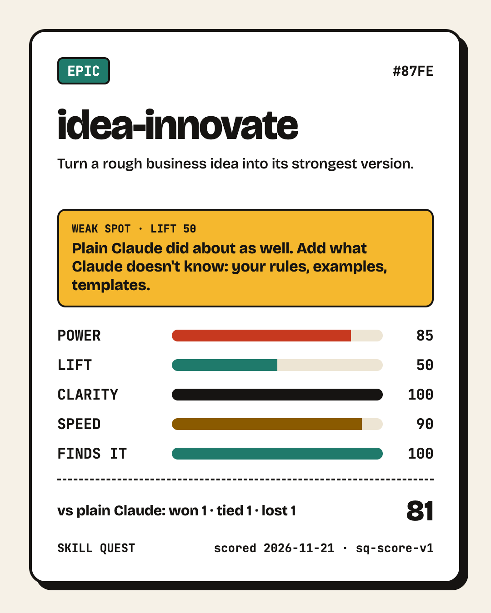

| Task | With skill | Plain Claude | Result | Judge's reason |
|---|---|---|---|---|
| I have a business idea: a subscription box of snacks from different countries. Is this a good idea? Please work it through and save your con | 4.5 | 3.8 | win | B scores 8 variations and says how each one fails, checks customer, money, moat and risk, and picks one version with a plain verdict. A lists 6 variations unscored and stress-tests only the generic idea. |
| I want to start a business around dog walking in my city. I'm a college student with about $500, 15 hours a week, and no car. Right now I ju | 4.3 | 4.5 | tie | A has more realistic income math and a fuller launch plan but uses verdict labels instead of numeric scores, while B gives clean numeric scoring and a sharp pick with somewhat optimistic capacity numbers and a narrower niche. |
| Help me pivot. My startup is a B2B SaaS that auto-generates meeting summaries for sales teams. After 8 months we have 40 paying customers at | 4.0 | 4.5 | loss | B builds the comparison on the supplied numbers with a 12-month model, probability-weighted expected ARR and LTV:CAC, and its riskiest-bet test sequence has clearer pass/fail thresholds and a kill rule; A is strong but scores on coarse 1-5 judgments. |
Engine: quick (subagents in your Claude Code session). Tokens used: 463574.